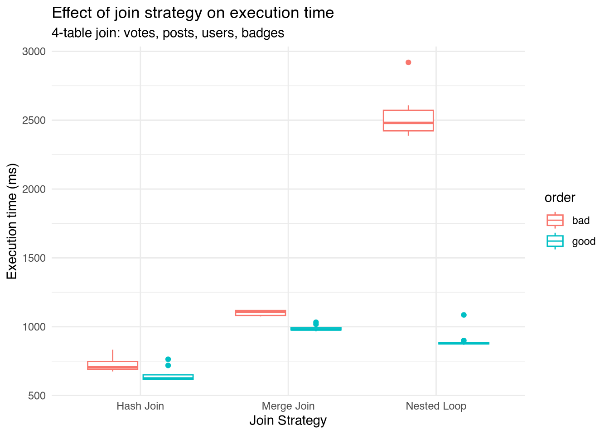

Show code
library(DBI)
library(RPostgres)
library(purrr)
library(tidyverse)
library(knitr)When you write a multi-table JOIN, you specify which tables connect and on what columns — but you do not specify how the database should physically combine them, nor in what order. Normally, the query optimizer uses the distribution of data within the tables to estimate the size of intermediate results and create a query plan.
This simulation isolates and measures the impacts of two main optimization decisions:
Normally the planner picks both automatically using table statistics and cost estimates.To see the effect of each choice, we override the planner with session-level SET commands, force one strategy and one order at a time, and time the result. This is mostly a teaching device — in production you almost always let the planner decide.
For this simulation, we’ll be using a modified version of PostgreSQL 13.1 which Han et al. (2021) used in their paper on cardinality estimation methods. Use the instructions from their GitHub repository to set up PostgreSQL on your own computer.
First, we connect to the database. A local PostgreSQL server connection is ideal for this simulation as it will have the least performance variability.
We’ll be using STATS-CEB, an anonymized dump of user-contributed content from the Stats StackExchange Network , a discussion board featuring questions about various topics in statistics. This database contains 8 tables: tags, comments, badges, posts, users, postLinks, postHistory, and votes. These tables are connected, all by primary keys such as post ID and user ID. For this simulation, a simplified version provided by Han et al. (2021) and included in the paper’s GitHub repository acts as a helpful benchmark for query performance assessment. Follow the instructions in the README for downloading PostgreSQL and the dataset.
For a more in-depth tutorial on setting up a SQL connection in R, see the Data Upload Tutorial.
First, we need to create indexes on the columns involved in the joins we’re performing. This ensures that the nested loop algorithm will be as efficient as possible. For more information on how indexes are structured in SQL, see the indexes and b-trees page .
In PostgreSQL, session variables can be specifically controlled to simulate different optimizer decisions.
enable_nestloop, enable_hashjoin, enable_mergejoin — turn each physical algorithm on or off. By enabling exactly one at a time, we force the planner to use that strategy.join_collapse_limit / from_collapse_limit — when set to 1, the planner is forbidden from reordering the tables and must join them in the literal order written in the FROM clause. This is what lets us dictate join order.max_parallel_workers_per_gather — set to 0 to turn off parallelism, so timing differences reflect the algorithm and not the number of workers.A key idea: because join_collapse_limit = 1 makes the engine respect the written order, the same logical query written with its tables in a different sequence becomes a different physical plan.
Both queries below answer the exact same question — count the rows produced by joining votes to their posts, those posts to their owners, and those owners to their badges, keeping only upvotes (votetypeid = 2) on well-scored posts (score > 10) owned by high-reputation users (reputation > 1000). They return identical results. The only difference is the order the tables are listed in.
sql_good_order <- "
SELECT COUNT(*)
FROM votes v
JOIN posts p ON v.postid = p.id
JOIN users u ON p.owneruserid = u.id
JOIN badges b ON b.userid = u.id
WHERE v.votetypeid = 2
AND p.score > 10
AND u.reputation > 1000
"
# Bad order: large/unfiltered tables first
sql_bad_order <- "
SELECT COUNT(*)
FROM badges b
JOIN users u ON b.userid = u.id
JOIN posts p ON p.owneruserid = u.id
JOIN votes v ON v.postid = p.id
WHERE v.votetypeid = 2
AND p.score > 10
AND u.reputation > 1000
"votes and posts, where the WHERE filters are most selective, so the very first join already works on a much smaller set of rows.badges and users, the large tables which are never filtered, so early intermediate results stay huge.To verify this result, we can run both of the queries separately.
To get a stable measurement we run one throwaway query first. This loads the relevant data pages into PostgreSQL’s buffer cache (a warm-cache measurement). Then, we run the query n more times, scraping the Execution Time and Planning Time lines out of each query plan.
EXPLAIN ANALYZE is the tool doing the real work here: it actually executes the query and reports how long each step took, as opposed to plain EXPLAIN, which only prints the query plan.
run_repeated_warm <- function(con, query, n = 10) {
# Warm-up run: loads pages into cache, result discarded
dbGetQuery(con, paste("EXPLAIN ANALYZE", query))
# Timed trials
map(1:n, function(i) {
lines <- dbGetQuery(con, paste("EXPLAIN ANALYZE", query))[[1]]
exec_time <- lines[grep("Execution Time", lines)] |>
str_extract("[0-9.]+") |> as.numeric()
plan_time <- lines[grep("Planning Time", lines)] |>
str_extract("[0-9.]+") |> as.numeric()
tibble(run = i, exec_ms = exec_time, plan_ms = plan_time)
}) |>
list_rbind()
}We now cross the two join orders with the three join strategies, forcing one strategy at a time by toggling the enable_* flags. That gives six timing distributions of ten runs each.
First, we enable the nested loop and disable hash and merge join algorithms.
We’ll run the query once to warm the cache, then extract the results of the next 10 repetitions.
Now, we’ll go through the same process for hash join.
dbExecute(con, "SET enable_nestloop = off")
dbExecute(con, "SET enable_hashjoin = on")
dbExecute(con, "SET enable_mergejoin = off")
results_hash_good <- run_repeated_warm(con, sql_good_order, 10) |>
mutate(join_type = "Hash Join", order = "good")
results_hash_bad <- run_repeated_warm(con, sql_bad_order, 10) |>
mutate(join_type = "Hash Join", order = "bad")Same for merge join:
dbExecute(con, "SET enable_nestloop = off")
dbExecute(con, "SET enable_hashjoin = off")
dbExecute(con, "SET enable_mergejoin = on")
results_merge_good <- run_repeated_warm(con, sql_good_order, 10) |>
mutate(join_type = "Merge Join", order = "good")
results_merge_bad <- run_repeated_warm(con, sql_bad_order, 10) |>
mutate(join_type = "Merge Join", order = "bad")
dbExecute(con, "DISCARD ALL")Here’s a plot comparing execution times between different join orders and algorithms.
bind_rows(
results_nest_good, results_nest_bad,
results_hash_good, results_hash_bad,
results_merge_good, results_merge_bad
) |>
ggplot(aes(x = join_type, y = exec_ms, color = order)) +
geom_boxplot() +
labs(
title = "Effect of join strategy on execution time",
subtitle = "4-table join: votes, posts, users, badges",
x = "Join Strategy",
y = "Execution time (ms)"
) +
theme_minimal()
What the plot shows. Each strategy responds differently to a bad join order. A Nested Loop is the most order-sensitive: for every row from the outer side it probes the inner side, so if the outer side starts large (bad order) the probe count explodes. A Hash Join builds a hash table on one input and streams the other past it, which makes it far more forgiving of a bad starting order. A Merge Join requires both inputs sorted on the join key, so its cost is dominated by sorting and it sits somewhere in between. In short: a good join order helps every strategy, but it rescues the Nested Loop.
To understand why some queries take longer than others, it can be helpful to read the plans created by the query optimizer. Wrapping a query in EXPLAIN ANALYZE allows us to read the query plan and see exactly how long each step of the query takes.
Before unpacking the query plans themselves, it’s important to recognize that they are most easily read from bottom to top. Each node/line pulls on the results from the child nodes indented below it. In other words, even though it initializes the query plan, the step labeled “1” in the plan actually finishes last. Additionally, the last 3 lines are summary statistics describing the number of heap fetches (when an Index Only Scan has to go back to the table because the index alone is insufficient), the planning time, and the execution time of the query.
Before unpacking the query plans themselves, it’s important to recognize that they are structured as trees and most easily read from bottom to top. Each node pulls rows from the child nodes indented beneath it, so the leaf nodes produce the first rows and the topmost node — labeled “1” — is the last to finish, even though it’s the first one called. (A few node types, like Hash and Sort, are exceptions in that they must consume their entire input before passing anything up, but the overall direction of reading still holds.) Finally, the last two lines report the planning time and execution time for the whole query, and any Heap Fetches line belongs to an Index Only Scan directly above it — it counts the times that scan had to return to the table because the index alone couldn’t confirm a row’s visibility.
First, we’ll run the query and allow the engine to optimize freely.
auto_plan <- dbGetQuery(con, paste("EXPLAIN ANALYZE", sql_bad_order))[[1]]
auto_exec <- auto_plan |> str_subset("Execution Time") |>
str_extract("[0-9.]+") |> as.numeric()
auto_plan_time <- auto_plan |> str_subset("Planning Time") |>
str_extract("[0-9.]+") |> as.numeric()
auto_plan # print the plan for the reader [1] "Aggregate (cost=2904.66..2904.67 rows=1 width=8) (actual time=1330.417..1330.418 rows=1 loops=1)"
[2] " -> Nested Loop (cost=805.26..2898.52 rows=2457 width=0) (actual time=12.625..1084.898 rows=5854758 loops=1)"
[3] " Join Filter: (u.id = b.userid)"
[4] " -> Nested Loop (cost=804.97..2858.88 rows=71 width=8) (actual time=12.605..64.835 rows=45869 loops=1)"
[5] " -> Hash Join (cost=804.55..2773.90 rows=25 width=12) (actual time=12.548..23.868 rows=2287 loops=1)"
[6] " Hash Cond: (p.owneruserid = u.id)"
[7] " -> Seq Scan on posts p (cost=0.00..1959.70 rows=3676 width=8) (actual time=0.016..10.144 rows=3552 loops=1)"
[8] " Filter: (score > 10)"
[9] " Rows Removed by Filter: 88424"
[10] " -> Hash (cost=801.06..801.06 rows=279 width=4) (actual time=12.518..12.519 rows=305 loops=1)"
[11] " Buckets: 1024 Batches: 1 Memory Usage: 19kB"
[12] " -> Seq Scan on users u (cost=0.00..801.06 rows=279 width=4) (actual time=0.008..12.375 rows=305 loops=1)"
[13] " Filter: (reputation > 1000)"
[14] " Rows Removed by Filter: 40020"
[15] " -> Index Scan using idx_votes_postid on votes v (cost=0.42..3.34 rows=6 width=4) (actual time=0.003..0.016 rows=20 loops=2287)"
[16] " Index Cond: (postid = p.id)"
[17] " Filter: (votetypeid = 2)"
[18] " Rows Removed by Filter: 3"
[19] " -> Index Only Scan using idx_badges_userid on badges b (cost=0.29..0.51 rows=4 width=4) (actual time=0.002..0.013 rows=128 loops=45869)"
[20] " Index Cond: (userid = p.owneruserid)"
[21] " Heap Fetches: 0"
[22] "Planning Time: 2.041 ms"
[23] "Execution Time: 1330.503 ms" Following the rows from the bottom up: PostgreSQL begins with two filtered scans. It scans posts and keeps only the 3,552 rows with score > 10 (line 7, discarding 88,424), and scans users to keep the 305 with reputation > 1000 (line 12), building a hash table on those users (line 10). Those two filtered inputs meet at the hash join (line 5), which matches posts to their owners on owneruserid and emits 2,287 rows. From there the rows flow upward through two nested loops: the first probes votes by index once per post (line 15), growing the result to 45,869 rows, and the second probes badges by index once per user (line 19), ballooning it to 5,854,758. Those rows finally arrive at the Aggregate (line 1), which collapses them into a single count.
Notice that we wrote the bad order in the FROM clause, but with reordering left enabled (join_collapse_limit at its default), the planner ignored our written order entirely. It led with posts and users — the two tables carrying the WHERE filters, and therefore the most selective — and pushed the unfiltered fan-out to the very end. Left to its own devices, the planner reconstructs something close to the good order on its own.
Each node reports actual time=startup..total, where the total is cumulative and measured per loop. Reading these upward shows the cost concentrating in one place: everything through the hash join finishes early, the first nested loop shortly after, and then the top nested loop dominates the runtime. That final node is the whole query. It turns 45,869 input rows into 5,854,758 output rows because each user owns roughly 128 badges (rows=128 loops=45869 on line 19), and pushing those 5.85 million rows through the join filter is where the bulk of the 1331 ms runtime lives.
For comparison, we’ll run the same query, but this time, we’ll force the engine to run nested loop joins on our defined “bad order” without allowing the optimizer to manipulate it.
forced_plan <- dbGetQuery(con, paste("EXPLAIN ANALYZE", sql_bad_order))[[1]]
forced_exec <- forced_plan |> str_subset("Execution Time") |>
str_extract("[0-9.]+") |> as.numeric()
forced_plan_time <- forced_plan |> str_subset("Planning Time") |>
str_extract("[0-9.]+") |> as.numeric()
forced_plan # print the plan for the reader [1] "Aggregate (cost=4672.77..4672.78 rows=1 width=8) (actual time=5137.780..5137.781 rows=1 loops=1)"
[2] " -> Nested Loop (cost=1.01..4666.63 rows=2457 width=0) (actual time=0.034..4854.670 rows=5854758 loops=1)"
[3] " -> Nested Loop (cost=0.58..1719.61 rows=867 width=4) (actual time=0.026..1215.462 rows=292650 loops=1)"
[4] " -> Nested Loop (cost=0.29..1449.36 rows=552 width=8) (actual time=0.019..6.775 rows=12371 loops=1)"
[5] " -> Seq Scan on users u (cost=0.00..801.06 rows=279 width=4) (actual time=0.007..3.684 rows=305 loops=1)"
[6] " Filter: (reputation > 1000)"
[7] " Rows Removed by Filter: 40020"
[8] " -> Index Only Scan using idx_badges_userid on badges b (cost=0.29..2.28 rows=4 width=4) (actual time=0.003..0.007 rows=41 loops=305)"
[9] " Index Cond: (userid = u.id)"
[10] " Heap Fetches: 0"
[11] " -> Index Scan using idx_posts_owneruserid on posts p (cost=0.29..0.48 rows=1 width=8) (actual time=0.009..0.096 rows=24 loops=12371)"
[12] " Index Cond: (owneruserid = b.userid)"
[13] " Filter: (score > 10)"
[14] " Rows Removed by Filter: 246"
[15] " -> Index Scan using idx_votes_postid on votes v (cost=0.42..3.34 rows=6 width=4) (actual time=0.003..0.011 rows=20 loops=292650)"
[16] " Index Cond: (postid = p.id)"
[17] " Filter: (votetypeid = 2)"
[18] " Rows Removed by Filter: 2"
[19] "Planning Time: 0.211 ms"
[20] "Execution Time: 5137.824 ms" Following the rows from the bottom up: with reordering forbidden (join_collapse_limit = 1), the engine must honor the literal FROM order, so it starts where we told it to — the unfiltered tables. It scans users, keeping the 305 rows with reputation > 1000 (line 5), and for each one probes badges by index (line 8), producing 12,371 rows. That result drives a nested loop into posts (line 11), probed once per badge — 12,371 loops — which grows the result to 292,650 rows. Those in turn drive a nested loop into votes (line 15), probed 292,650 times, fanning out to 5,854,758 rows before the Aggregate (line 1) collapses them to a single count. Every join is a nested loop, and no hash table appears anywhere.
Compare the intermediate row counts to the free plan. There, the engine led with the two filtered tables and kept early results tiny — the first join carried 2,287 rows, the next 45,869. Here, forbidden from leading with the selective filters, the engine carries 12,371 rows out of the very first join and 292,650 out of the second. The same 5.85 million rows arrive at the top in both plans, but the forced order hauls a far larger intermediate result through the back half of the tree, and pays for it one row at a time: the votes index scan (line 15) executes across 292,650 loops rather than the 2,287 loops of the free plan. The slowdown shows up directly in the totals — execution time rises from roughly 1331 ms to 5138 ms (line 20), a 3.9-fold penalty for a query returning the identical single number.
This is the worst case the earlier boxplots only hinted at — a bad order and the most order-sensitive algorithm, combined, on a query the planner would otherwise have rescued. The top join still emits the same 5.85 million rows it always did, and the planner still expected only 2,457; what changed is that we stripped away its two best safeguards — the freedom to lead with the selective tables, and the option to use a hash join where a nested loop explodes. Left alone, it used both. Forced, it can use neither.
Every measurement above is warm-cache: the warm-up run loads the relevant pages into PostgreSQL’s buffer pool, so the timed runs reflect the cost of the join algorithm rather than the cost of fetching data from disk. This is the right thing to measure for a query that runs often enough to keep its pages resident in memory.
A cold-cache test — closer to a first-of-the-day query, or an analytics query over tables too large to stay in RAM — would be a useful counterpart, but it is genuinely hard to do faithfully here. A real cold measurement has to evict data from two separate layers: PostgreSQL’s own shared_buffers, and the operating system’s page cache underneath it. Neither is reachable from inside a database session. DISCARD ALL only resets session state (planner settings, prepared statements, temp tables) and leaves both caches fully populated; flushing the OS page cache requires root access we don’t have in this environment. Reconnecting on each iteration looks colder but measures essentially the same warm pages.
So rather than report numbers from a harness that can’t actually clear the cache, we’ll state the expectation instead: with a true cold cache the order penalty should widen, not shrink. A bad join order carries more rows through each step and therefore touches more pages; when those pages must be read from disk instead of memory, the extra I/O falls hardest on exactly the plan that was already doing the most work — the large-table-first Nested Loop. The warm-cache results below are thus a conservative picture of how much join order matters; on cold data the gap between good and bad order would only grow.
The planner doesn’t time queries — it estimates how many rows each step will emit and picks the cheapest plan based on those estimates. When the estimates are wrong, the plan is wrong. The function below pulls every node out of a plan and compares the planner’s estimated row count to the actual row count, computing a q-error defined as \(\max\left(\dfrac{\text{estimated}}{\text{actual}}, \dfrac{\text{actual}}{\text{estimated}}\right)\). A q-error near 1 means the estimate was accurate; a large q-error means the planner was badly misled at that node.
extract_estimates <- function(con, sql, label) {
plan <- dbGetQuery(con, paste("EXPLAIN ANALYZE", sql))[[1]]
# Keep only nodes that report actual timing
node_lines <- plan[grep("actual time", plan)]
map(node_lines, function(line) {
operation <- str_extract(line,
"(Nested Loop|Hash Join|Merge Join|Seq Scan|Index Only Scan|Index Scan|Aggregate|Gather)")
estimated <- str_extract(line, "rows=([0-9]+)\\s+width") |>
str_extract("[0-9]+") |> as.numeric()
actual <- str_extract(line, "actual time=[0-9.]+\\.\\.[0-9.]+ rows=([0-9]+)") |>
str_extract("[0-9]+$") |> as.numeric()
loops <- str_extract(line, "loops=([0-9]+)") |>
str_extract("[0-9]+") |> as.numeric()
tibble(
label = label,
operation = operation,
estimated = estimated,
actual = actual,
loops = loops,
actual_total = actual * loops,
q_error = max(estimated/actual_total, actual_total/estimated)
)
}) |>
list_rbind() |>
filter(!is.na(operation), !is.na(estimated), !is.na(actual))
}dbExecute(con, "SET max_parallel_workers_per_gather = 0")
# Forced orders: planner not allowed to reorder
dbExecute(con, "SET join_collapse_limit = 1")
good_estimates <- extract_estimates(con, sql_good_order, "forced good order")
bad_estimates <- extract_estimates(con, sql_bad_order, "forced bad order")
# Auto-optimized: planner free to choose its own order
dbExecute(con, "SET join_collapse_limit = 8")
auto_estimates <- extract_estimates(con, sql_good_order, "auto-optimized")
all_estimates <- bind_rows(good_estimates, bad_estimates, auto_estimates)| label | operation | estimated | actual | loops | actual_total | q_error |
|---|---|---|---|---|---|---|
| forced good order | Aggregate | 1 | 1 | 1 | 1 | 1.000000e+00 |
| forced good order | Nested Loop | 2421 | 5854758 | 1 | 5854758 | 2.418322e+03 |
| forced good order | Nested Loop | 71 | 45869 | 1 | 45869 | 6.460423e+02 |
| forced good order | Nested Loop | 10416 | 70198 | 1 | 70198 | 6.739439e+00 |
| forced good order | Seq Scan | 3676 | 3552 | 1 | 3552 | 1.034910e+00 |
| forced good order | Index Scan | 6 | 20 | 3552 | 71040 | 1.184000e+04 |
| forced good order | Index Scan | 1 | 1 | 70198 | 70198 | 7.019800e+04 |
| forced good order | Index Only Scan | 4 | 128 | 45869 | 5871232 | 1.467808e+06 |
| forced bad order | Aggregate | 1 | 1 | 1 | 1 | 1.000000e+00 |
| forced bad order | Nested Loop | 2457 | 5854758 | 1 | 5854758 | 2.382889e+03 |
| forced bad order | Nested Loop | 867 | 292650 | 1 | 292650 | 3.375433e+02 |
| forced bad order | Nested Loop | 552 | 12371 | 1 | 12371 | 2.241123e+01 |
| forced bad order | Seq Scan | 279 | 305 | 1 | 305 | 1.093190e+00 |
| forced bad order | Index Only Scan | 4 | 41 | 305 | 12505 | 3.126250e+03 |
| forced bad order | Index Scan | 1 | 24 | 12371 | 296904 | 2.969040e+05 |
| forced bad order | Index Scan | 6 | 20 | 292650 | 5853000 | 9.755000e+05 |
| auto-optimized | Aggregate | 1 | 1 | 1 | 1 | 1.000000e+00 |
| auto-optimized | Nested Loop | 2421 | 5854758 | 1 | 5854758 | 2.418322e+03 |
| auto-optimized | Nested Loop | 71 | 45869 | 1 | 45869 | 6.460423e+02 |
| auto-optimized | Nested Loop | 25 | 2287 | 1 | 2287 | 9.148000e+01 |
| auto-optimized | Seq Scan | 279 | 305 | 1 | 305 | 1.093190e+00 |
| auto-optimized | Index Scan | 1 | 7 | 305 | 2135 | 2.135000e+03 |
| auto-optimized | Index Scan | 6 | 20 | 2287 | 45740 | 7.623333e+03 |
| auto-optimized | Index Only Scan | 4 | 128 | 45869 | 5871232 | 1.467808e+06 |
Reading this table. The auto-optimized rows show what the planner does when left alone (join_collapse_limit = 8 lets it reorder up to eight tables freely); the two forced labels show the plans we dictated. The first thing to notice is that the worst single q-error isn’t unique to the bad plan — the badges Index Only Scan misestimates by a factor of ~1.5 million in every plan (estimated 4 rows per user, actual 128), because that error lives in a table’s statistics and travels with it no matter where the table is joined. The leaf-level estimates are simply bad, and all three plans inherit them. What separates the plans is not the size of the individual errors but where they fall and how many rows pass through them. Trace the actual column down each plan. In the auto and good plans, the early joins stay small — the hash join emits 2,287 rows, the next nested loop 45,869 — and the catastrophic fan-out to 5.85 million only happens at the final node. In the forced bad order, the row count is already inflated much earlier: the first nested loop emits 12,371 rows, the second 292,650, and the underestimated index scans beneath them (q-errors of ~3e5 and ~9.7e5) are therefore executed across hundreds of thousands of loops rather than a few thousand. The same per-row estimation error costs far more when it sits under a node looping 292,650 times than one looping 2,287 times. This is the mechanism behind the timing differences. A bad order isn’t slow by definition — it’s slow because it forces the planner’s already-wrong estimates to be paid out over much larger intermediate results. The planner costs each plan believing the top join will emit ~2,450 rows (it emits 5.85 million in all three), but in the bad-order plan that misestimate is compounded by every node beneath it also carrying a bloated row count. With accurate leaf statistics the planner would never have chosen a nested loop at the top at all; the cascading underestimate is what makes the expensive plan look cheap.
It is also important to recognize that PostgreSQL’s cardinality estimation methods are deeply flawed, and can sometimes produce catastrophic results on complex multi-table joins. Analysis of these methods goes beyond the scope of this project, but Han et al. (2021) produced a study comparing the performance of existing cardinality estimation methods, including contemporary machine-learning and statistically motivated algorithms. It is a very interesting read and explains the deeper mechanics underlying query performance on real-world benchmark datasets.
| Nested Loop | Hash Join | Merge Join | |
|---|---|---|---|
| How it matches rows | Probe inner table once per outer row | Build hash on one side, stream other | Sort both sides, walk in lockstep |
| Needs an index? | Strongly benefits from inner index | No | Benefits from pre-sorted inputs |
| Sensitivity to join order | Very high | Low | Moderate |
| Best when | Outer side is small after filtering | Inputs are large and unsorted | Inputs already sorted on the key |
First, join order matters most for Nested Loops: leading with your most-filtered tables keeps the outer row count — and therefore the probe count — small. Second, the planner’s choices flow directly from its row estimates, so accurate statistics (and thus low q-error) are what let it pick the right strategy and order on its own. Forcing these settings is useful for understanding the engine, but in practice the lesson is to keep statistics fresh and write selective filters, then trust the optimizer.